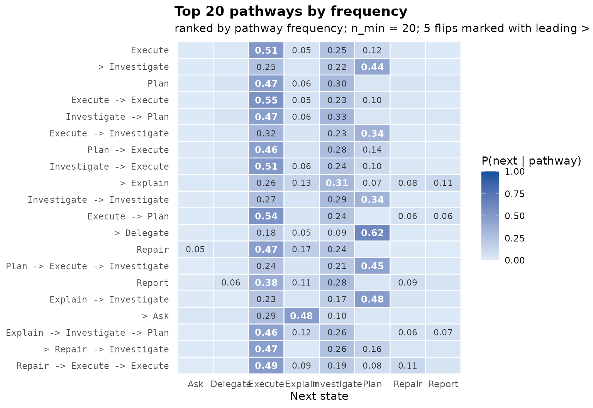

Case study: human-AI collaboration
Written by Mohammed Saqr and Sonsoles López-Pernas
Source:vignettes/articles/case-ai-collaboration.Rmd
case-ai-collaboration.RmdWork with an AI assistant unfolds as a conversation in which tasks are delegated, plans are made, code is executed and inspected, results are explained and errors are repaired. Coding the messages of such sessions turns each session into a sequence of collaboration moves, and the order of those moves describes how the collaboration proceeds: whether an explanation leads to further investigation, what typically follows a delegation, and which histories precede a repair.
Two analytical choices shape any sequence analysis of such data. The first is how the log is cut into sequences. Collaboration logs are usually exported as one row per message with a timestamp and a session identifier, and the right unit of analysis is the session, not the calendar day or the project. The second is the granularity of the state space. A coding scheme with eight moves can be collapsed into three broader categories, and the two levels can tell different stories about how much history matters.
This case study fits variable-order transition trees (Ron, Singer & Tishby, 1996; Bühlmann & Wyner, 1999) to a coded log of human-AI collaboration sessions. It asks how the log should be reshaped into sequences, how the coarse and fine state spaces differ in memory and predictability, which histories predict which moves, and which histories precede a repair.
Data
ai_long is a bundled log of coded messages from
AI-assisted project work, one row per coded move. A message can carry
several codes, so a message may occupy several rows.
-
Actor:
project— the project; 34 projects contribute sessions. -
Session:
session_id— the collaboration session, 428 in total; each session is one sequence. -
Time:
timestamp— Unix time in seconds;session_dateholds the same date as text. -
Order:
order_in_session— the position of the move within its session;message_idandcode_orderidentify the message and the position of the code within it. -
Fine state:
code— the move, one of eight codes (Ask,Delegate,Execute,Explain,Investigate,Plan,Repair,Report). -
Coarse state:
cluster— the category of the move:Action(Delegate,Execute,Investigate),Communication(Ask,Explain,Report) orRepair(Plan,Repair).
From a message log to session sequences
The timestamp is stored as Unix seconds. Converting it to clock time shows its resolution.
with(ai_long, table(clock_time = format(as.POSIXct(timestamp, tz = "UTC"), "%H:%M:%S")))#> clock_time
#> 22:00:00
#> 8551
with(ai_long, range(as.POSIXct(timestamp, tz = "UTC")))#> [1] "2026-02-04 22:00:00 UTC" "2026-03-07 22:00:00 UTC"All 8551 timestamps carry the same clock time, 22:00 UTC, which is
midnight in a UTC+2 time zone: the timestamp records the date of the
session (session_date), not the time of the message. The
log spans about a month of sessions. A time-gap rule, which starts a new
session whenever two consecutive events are more than 15 minutes apart,
cannot recover sessions from such a timestamp.
prepare_input() shows the consequence: with
is_unix_time = TRUE the numeric column is read as Unix
time, and every day of a project becomes one sequence.
prepare_input(ai_long, actor = "project", time = "timestamp",
is_unix_time = TRUE, order = "order_in_session",
action = "code") |>
nrow()#> [1] 160The time-gap route produces 160 sequences, one per project and day,
because several sessions of the same project held on the same day are
merged into one. Naming the session column instead takes the sessions
from the data, and order orders the moves within each
session.
sessions <- prepare_input(ai_long, actor = "project", session = "session_id",
order = "order_in_session", action = "code")
nrow(sessions)#> [1] 428#> Min. 1st Qu. Median Mean 3rd Qu. Max.
#> 1 7 13 20 25 138The session route gives the 428 sessions of the data. Sessions are
short and uneven: the median session holds 13 moves, the longest 138.
The rest of the analysis passes the same arguments to
context_tree() and tune_tree(), which reshape
the log in the same way before fitting.
Coarse and fine state spaces
The fine tree models the eight codes, the coarse tree the three categories. Both are grown to a depth of three moves with at least ten occurrences per context.
fine <- context_tree(ai_long, actor = "project", session = "session_id",
order = "order_in_session", action = "code",
max_depth = 3L, min_count = 10L)
coarse <- context_tree(ai_long, actor = "project", session = "session_id",
order = "order_in_session", action = "cluster",
max_depth = 3L, min_count = 10L)
state_frequencies(fine)#> state count proportion
#> 1 Execute 3258 0.3810
#> 2 Investigate 2317 0.2710
#> 3 Plan 1620 0.1895
#> 4 Explain 524 0.0613
#> 5 Delegate 295 0.0345
#> 6 Repair 257 0.0301
#> 7 Report 181 0.0212
#> 8 Ask 99 0.0116
state_frequencies(coarse)#> state count proportion
#> 1 Action 5870 0.686
#> 2 Repair 1877 0.220
#> 3 Communication 804 0.094Execute (38.1% of moves), Investigate
(27.1%) and Plan (18.9%) dominate the fine codes;
Ask is the rarest move (1.2%). At the coarse level,
Action covers 68.6% of moves, Repair 22.0% and
Communication 9.4%. Because Plan belongs to
the Repair category, most coarse Repair moves
are planning moves; the code Repair itself accounts for
3.0% of moves.
How much history each state space needs is a question for held-out
data. tune_tree() cross-validates depths from zero, the
model with no history, to three, with and without pruning, over five
folds of sessions.
tuned_fine <- tune_tree(ai_long, actor = "project", session = "session_id",
order = "order_in_session", action = "code",
max_depth = 0L:3L, min_count = 10L,
prune = c(FALSE, TRUE), folds = 5L, seed = 1L)
print(as.data.frame(tuned_fine), digits = 4)#> max_depth min_count smoothing prune logLik n_scored perplexity
#> 1 1 10 floor(ymin=0.001, rule=interpolate) FALSE -12332 8551 4.230
#> 2 1 10 floor(ymin=0.001, rule=interpolate) TRUE -12332 8551 4.230
#> 3 2 10 floor(ymin=0.001, rule=interpolate) TRUE -12371 8551 4.249
#> 4 3 10 floor(ymin=0.001, rule=interpolate) TRUE -12397 8551 4.262
#> 5 2 10 floor(ymin=0.001, rule=interpolate) FALSE -12536 8551 4.332
#> 6 3 10 floor(ymin=0.001, rule=interpolate) FALSE -12949 8551 4.546
#> 7 0 10 floor(ymin=0.001, rule=interpolate) FALSE -13369 8551 4.775
#> 8 0 10 floor(ymin=0.001, rule=interpolate) TRUE -13369 8551 4.775
#> n_nodes_avg folds_failed
#> 1 9.0 0
#> 2 9.0 0
#> 3 16.6 0
#> 4 20.6 0
#> 5 52.8 0
#> 6 143.8 0
#> 7 1.0 0
#> 8 1.0 0For the eight codes, the first-order model has the lowest held-out perplexity (4.230), against 4.775 for the model without history: knowing the previous move reduces the effective number of candidate next moves by 11%. Longer histories do not improve on this. The pruned depth-two and depth-three trees come close (4.249 and 4.262), and the unpruned depth-three tree, with an average of 144 contexts per fold, is worse (4.546).
tuned_coarse <- tune_tree(ai_long, actor = "project", session = "session_id",
order = "order_in_session", action = "cluster",
max_depth = 0L:3L, min_count = 10L,
prune = c(FALSE, TRUE), folds = 5L, seed = 1L)
print(as.data.frame(tuned_coarse), digits = 4)#> max_depth min_count smoothing prune logLik n_scored perplexity
#> 1 3 10 floor(ymin=0.001, rule=interpolate) TRUE -6544 8551 2.150
#> 2 2 10 floor(ymin=0.001, rule=interpolate) TRUE -6558 8551 2.153
#> 3 2 10 floor(ymin=0.001, rule=interpolate) FALSE -6560 8551 2.154
#> 4 3 10 floor(ymin=0.001, rule=interpolate) FALSE -6563 8551 2.154
#> 5 1 10 floor(ymin=0.001, rule=interpolate) FALSE -6602 8551 2.164
#> 6 1 10 floor(ymin=0.001, rule=interpolate) TRUE -6602 8551 2.164
#> 7 0 10 floor(ymin=0.001, rule=interpolate) FALSE -6957 8551 2.256
#> 8 0 10 floor(ymin=0.001, rule=interpolate) TRUE -6957 8551 2.256
#> n_nodes_avg folds_failed
#> 1 9.4 0
#> 2 6.6 0
#> 3 13.0 0
#> 4 37.8 0
#> 5 4.0 0
#> 6 4.0 0
#> 7 1.0 0
#> 8 1.0 0For the three categories, the pruned depth-three tree is selected, with a held-out perplexity of 2.150 against 2.164 for the first-order model and 2.256 without history. History reduces the perplexity by only 5%, but the reduction continues beyond the first move: at the coarse level, runs of actions carry information that a single previous category does not.
The two state spaces thus describe the process differently. At the fine level the identity of the previous move matters most, and longer histories do not generalize to new sessions. Collapsing the codes into categories removes much of that first-order information, because moves within the same category lead to different next moves, while making longer runs of the same category visible.
Which histories predict which moves?
The fine tree is pruned with the likelihood-ratio criterion before its contexts are read.
fine_pruned <- prune_tree(fine, criterion = "G2")
fine_pruned#> <transitiontrees> 24 nodes, depth <= 3, 8 states [pruned]
#> alphabet : Ask, Delegate, Execute, Explain, Investigate, Plan, Repair, Report
#> fit on : 428 sequences, 8551 observations
#> smoothing: floor(ymin=0.001, rule=interpolate) min_count = 10
#> pruned by: G2 alpha = 0.05
#> (start) n=8551 -> Execute (0.38)
#> |-- Ask n=91 -> Explain (0.48)
#> |-- Delegate n=280 -> Plan (0.62)
#> |-- Execute n=3090 -> Execute (0.51)
#> | |-- Execute n=1503 -> Execute (0.55)
#> | | `-- Repair n=53 -> Execute (0.49)
#> | |-- Investigate n=532 -> Execute (0.51)
#> | | `-- Explain n=32 -> Execute (0.38)
#> | `-- Plan n=674 -> Execute (0.46)
#> |-- Explain n=504 -> Investigate (0.31)
#> |-- Investigate n=2235 -> Plan (0.44)
#> | |-- Execute n=727 -> Plan (0.34)
#> | | `-- Plan n=183 -> Plan (0.45)
#> | |-- Explain n=154 -> Plan (0.48)
#> | |-- Investigate n=476 -> Plan (0.34)
#> | `-- Repair n=58 -> Execute (0.47)
#> |-- Plan n=1510 -> Execute (0.47)
#> | |-- Execute n=341 -> Execute (0.54)
#> | |-- Explain n=30 -> Investigate (0.33)
#> | `-- Investigate n=921 -> Execute (0.47)
#> | `-- Explain n=69 -> Execute (0.46)
#> |-- Repair n=251 -> Execute (0.47)
#> | `-- Explain n=41 -> Explain (0.46)
#> `-- Report n=162 -> Execute (0.38)The pruned tree keeps 24 of 161 nodes.
divergent_pathways() ranks the retained contexts by how far
their next-move distribution departs from that of their parent
context.
divergent_pathways(fine_pruned, top = 10, min_count = 20L)#> pathway depth count likely_next next_probability divergence
#> 1 Ask 1 91 Explain 0.484 1.123
#> 2 Delegate 1 280 Plan 0.621 0.670
#> 3 Explain -> Plan 2 30 Investigate 0.332 0.597
#> 4 Explain -> Repair 2 41 Explain 0.461 0.408
#> 5 Repair 1 251 Execute 0.474 0.394
#> 6 Explain -> Investigate -> Execute 3 32 Execute 0.375 0.350
#> 7 Explain 1 504 Investigate 0.313 0.348
#> 8 Repair -> Investigate 2 58 Execute 0.466 0.326
#> 9 Report 1 162 Execute 0.377 0.250
#> 10 Investigate 1 2235 Plan 0.437 0.239
#> changes_prediction
#> 1 TRUE
#> 2 TRUE
#> 3 TRUE
#> 4 TRUE
#> 5 FALSE
#> 6 FALSE
#> 7 TRUE
#> 8 TRUE
#> 9 FALSE
#> 10 TRUEThe rare moves are the most informative contexts. An Ask
is followed by an Explain (0.48), a Delegate
by a Plan (0.62) and an Explain by an
Investigate (0.31); each of these changes the predicted
next move away from Execute, the most likely move without
history. Investigate, which is frequent, is followed most
often by Plan (0.44). Two second-order contexts redirect
the prediction of their parents: after Explain -> Repair
the most likely next move is another Explain (0.46),
whereas Repair alone leads to Execute, and
after Repair -> Investigate the most likely next move is
Execute (0.47), whereas Investigate alone
leads to Plan.
plot_pathways() draws the next-move distribution of each
context as a heatmap.
plot_pathways(fine_pruned, min_count = 20L)
The heatmap shows the 20 most frequent contexts with at least 20
occurrences. Each row is a context and each column a next move; the cell
shows the conditional probability, and a leading > marks
the five contexts whose most likely next move differs from that of their
parent. The Execute column is dark for most contexts, which
reflects the dominance of execution in these sessions. The marked rows
depart from it: Delegate concentrates its probability on
Plan (0.62), Ask on Explain
(0.48), and Investigate and
Repair -> Investigate lead to Plan and
Execute respectively.
Which histories precede a repair?
A repair move signals that something in the collaboration has to be
corrected, which makes the histories that lead to it of particular
interest. mine_contexts() lists, for one move, its
probability after each context of the tree. Contexts seen fewer than 30
times are dropped.
mine_contexts(fine_pruned, "Repair", min_count = 30L)#> pathway depth count state prob is_modal
#> 1 Explain -> Plan 2 30 Repair 0.16633 FALSE
#> 2 Explain -> Investigate -> Execute 3 32 Repair 0.12500 FALSE
#> 3 Repair -> Execute -> Execute 3 53 Repair 0.11330 FALSE
#> 4 Report 1 162 Repair 0.08642 FALSE
#> 5 Explain 1 504 Repair 0.08333 FALSE
#> 6 Execute -> Plan 2 341 Repair 0.06158 FALSE
#> 7 Explain -> Investigate -> Plan 3 69 Repair 0.05851 FALSE
#> 8 Explain -> Investigate 2 154 Repair 0.04609 FALSE
#> 9 Plan 1 1510 Repair 0.03974 FALSE
#> 10 Repair -> Investigate 2 58 Repair 0.03448 FALSE
#> 11 Execute -> Execute 2 1503 Repair 0.03127 FALSE
#> 12 Execute 1 3090 Repair 0.03010 FALSE
#> 13 (start) 0 8551 Repair 0.03005 FALSE
#> 14 Investigate -> Plan 2 921 Repair 0.02823 FALSE
#> 15 Investigate -> Execute 2 532 Repair 0.02820 FALSE
#> 16 Plan -> Execute 2 674 Repair 0.02522 FALSE
#> 17 Execute -> Investigate 2 727 Repair 0.02338 FALSE
#> 18 Ask 1 91 Repair 0.02198 FALSE
#> 19 Investigate 1 2235 Repair 0.01790 FALSE
#> 20 Plan -> Execute -> Investigate 3 183 Repair 0.01726 FALSE
#> 21 Investigate -> Investigate 2 476 Repair 0.01681 FALSE
#> 22 Delegate 1 280 Repair 0.01429 FALSE
#> 23 Repair 1 251 Repair 0.00797 FALSE
#> 24 Explain -> Repair 2 41 Repair 0.00100 FALSEWithout history, the probability of a repair is 0.030. It is highest
after Explain -> Plan (0.166, 30 occurrences), and it is
raised after a Report (0.086) and after an
Explain (0.083), roughly three times the baseline. Two
three-move contexts,
Explain -> Investigate -> Execute (0.125) and
Repair -> Execute -> Execute (0.113), show that an
explanation or a repair two moves earlier also raises the chance of a
repair. A repair directly after Explain -> Repair is
almost never observed (0.001, the smoothing floor). After the frequent
Execute and Investigate moves it stays close
to or below the baseline (0.030 and 0.018). Repair is never the most
likely next move (is_modal is FALSE
throughout): even in the contexts that raise it, repairs remain the
exception. Repairs are therefore more likely after communication moves,
explanations and reports, than after action moves, which is consistent
with repairs that follow a description of what went wrong rather than
the action itself.
The same question can be asked of the unpruned tree, which keeps contexts that the G² test does not support. A lower probability bound restricts the list to contexts in which a repair is at least three times as likely as without history.
mine_contexts(fine, "Repair", min_prob = 0.09, min_count = 20L)#> pathway depth count state prob is_modal
#> 1 Explain -> Plan 2 30 Repair 0.1663 FALSE
#> 2 Ask -> Explain 2 39 Repair 0.1536 FALSE
#> 3 Repair -> Explain 2 43 Repair 0.1394 FALSE
#> 4 Explain -> Report 2 53 Repair 0.1320 FALSE
#> 5 Execute -> Investigate -> Explain 3 31 Repair 0.1290 FALSE
#> 6 Explain -> Investigate -> Execute 3 32 Repair 0.1250 FALSE
#> 7 Repair -> Execute -> Execute 3 53 Repair 0.1133 FALSE
#> 8 Investigate -> Plan -> Report 3 29 Repair 0.1036 FALSE
#> 9 Investigate -> Explain -> Investigate 3 29 Repair 0.1036 FALSE
#> 10 Investigate -> Execute -> Explain 3 31 Repair 0.0970 FALSE
#> 11 Repair -> Execute -> Investigate 3 31 Repair 0.0970 FALSE
#> 12 Ask -> Execute 2 21 Repair 0.0955 FALSEThe unpruned tree adds contexts such as
Ask -> Explain (0.15) and
Repair -> Explain (0.14), again ending in communication
moves. These contexts are not retained by pruning, so they are
candidates for further study rather than established findings.
What the analysis shows
The way the log is cut into sequences changes the data: because the
Unix timestamps hold only the session date, a time-gap rule merges
same-day sessions into 160 sequences, and the session column is needed
to recover the 428 sessions. In the fine state space the previous move
carries most of the predictive information, and rare moves such as
Ask and Delegate are the most informative
contexts; in the coarse space the effect of history is smaller but
extends over longer runs. Repairs are rare, and they are most likely
after explanations and reports.
The analysis has limits. ai_long is a bundled example
dataset, and its codes do not identify whether a move was made by the
human or the AI assistant, so the pathways describe the joint
conversation rather than either partner. Sessions are nested within 34
projects, and the tree pools them; projects with many sessions weigh
more heavily in every estimate. The contexts in which repairs are more
likely are based on 30 to a few hundred occurrences, and their
reliability under resampling of sessions can be checked with
bootstrap_pathways().
References
Bühlmann, P., & Wyner, A. J. (1999). Variable length Markov chains. The Annals of Statistics, 27(2), 480-513. doi:10.1214/aos/1018031204
Ron, D., Singer, Y., & Tishby, N. (1996). The power of amnesia: Learning probabilistic automata with variable memory length. Machine Learning, 25(2-3), 117-149. doi:10.1023/A:1026490906255